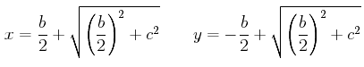

Let a straight line AB be bisected at the point C, and let a straight line BD be added to it in a straight line.
I say that the rectangle AD by DB together with the square on CB equals the square on CD.
Describe the square CEFD on CD, and join DE. Draw BG through the point B parallel to either EC or DF, draw KM through the point H parallel to either AB or EF, and further draw AK through A parallel to either CL or DM.
Then, since AC equals CB, AL also equals CH. But CH equals HF. Therefore AL also equals HF.
Add CM to each. Therefore the whole AM equals the gnomon NOP.
But AM is the rectangle AD by DB, for DM equals DB. Therefore the gnomon NOP also equals the rectangle AD by DB.
Add LG, which equals the square on BC, to each. Therefore the rectangle AD by DB together with the square on CB equals the gnomon NOP plus LG.
But the gnomon NOP and LG are the whole square CEFD, which is described on CD.
Therefore the rectangle AD by DB together with the square on CB equals the square on CD.
Therefore if a straight line is bisected and a straight line is added to it in a straight line, then the rectangle contained by the whole with the added straight line and the added straight line together with the square on the half equals the square on the straight line made up of the half and the added straight line.
This proposition is remarkably similar to the last one, II.5, except the point D does not lie on the line AB but on that line extended.
Let b denote the line AB, x denote AD, and y denote BD as in II.5. Then x – y = b (as opposed to x + y = b as in II.5).
According to this proposition the rectangle AD by DB, which is the product xy, is the difference of two squares, the large one being the square on the line CD, that is the square of x – b/2, and the small one being the square on the line CB, that is, the square of b/2. Algebraically,
This equation is easily verified with modern algebra, but it's also easily verified in geometry, as done here in the proof.
The geometric proof is primarily an exercise in cutting and pasting. The rectangle AB by DB is the rectangle AM, which is the sum of the rectangles AL and CM. But the rectangles AL, CH, and HF are all equal. Therefore, the rectangle AB by DB equals the gnomon formed by the rectangles CM and HF. That gnomon is the square CF minus the square LG, but the latter equals the square on BC. Thus, the rectangle AB by DB equals the square on DB minus the square on CB.
As was II.5, this proposition is set up to help in the solution of a quadratic problem:
In terms of x alone, this is equivalent to solving the quadratic equation x(x – b) = c2. Since this proposition says that x(x – b) = (x – b/2)2 – (b/2)2, the problem reduces to solving the equation
that is, finding CD so that CD2 = (b/2)2 + c2. By I.47, if a right triangle is constructed with one side equal to b/2 and another equal to c, then the hypotenuse will equal the required value for CD. Algebraically, the solutions AD for x and BD for y have the values

This analysis yields a construction to solve the quadratic problem stated above.
To apply a rectangle equal to a given square to a given straight line but exceeding it by a square.
Let AB be the given straight line. Bisect it at C. Construct a perpendicular BQ to AB at B equal to the side of the given square. Draw CQ. Extend AB to D so that BD equals CQ.
Then, as described above, AB has been extended to D so that AD times BD equals the given square.
This construction is not found in the Elements, but a generalization of it to parallelograms is proposition VI.29.
This proposition is used in II.11, III.36, and a lemma for X.29.
| Book II | II.11 |
|---|---|
| Book III | III.36 |
| Book X | X.29 |